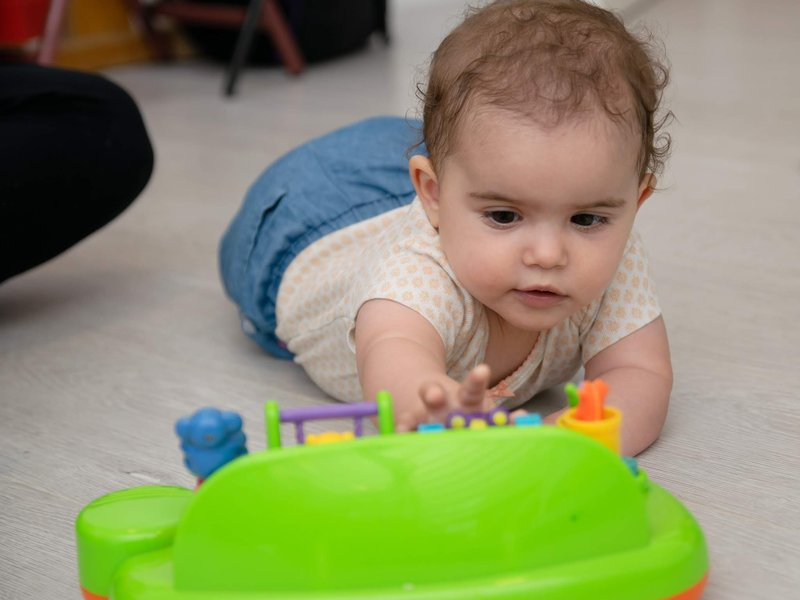
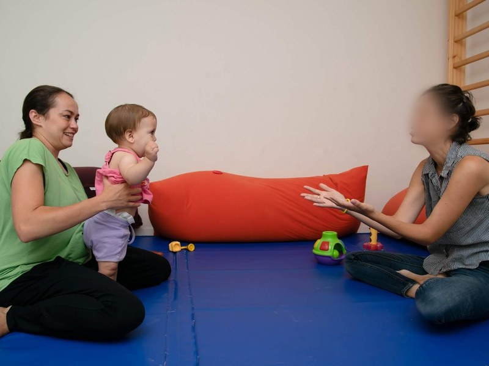
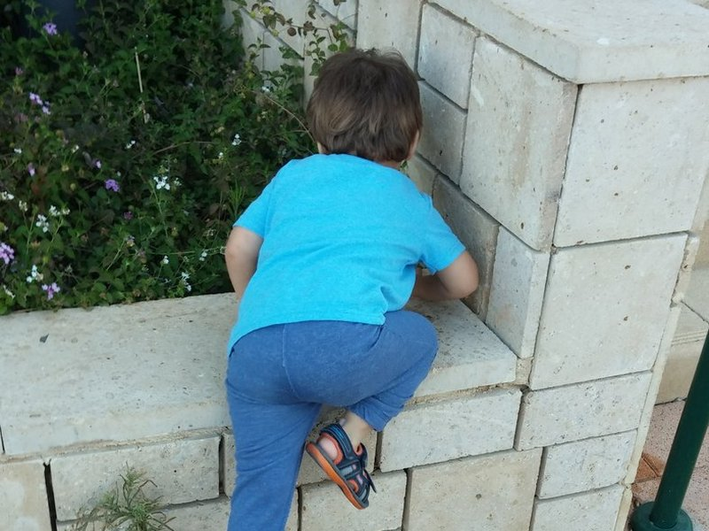
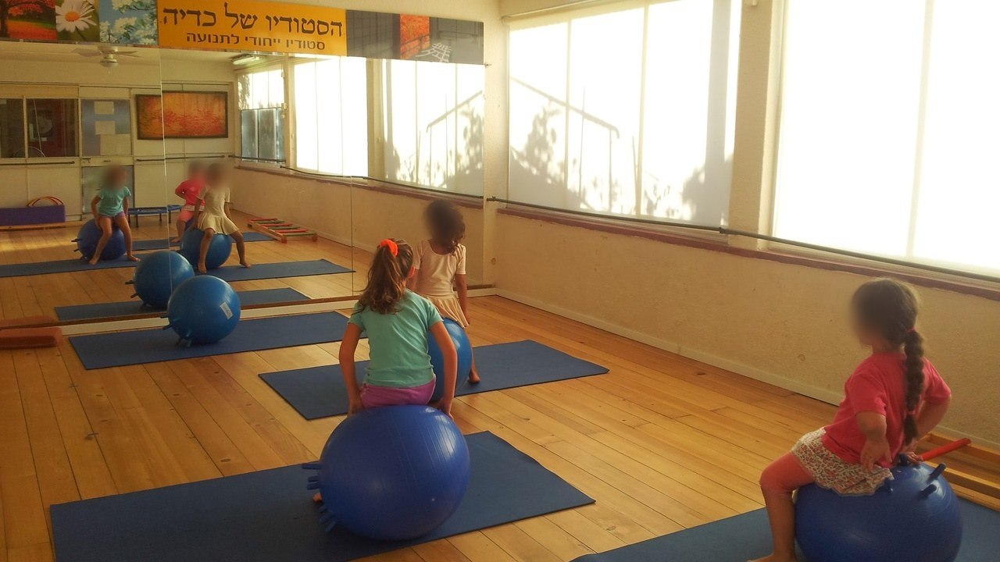
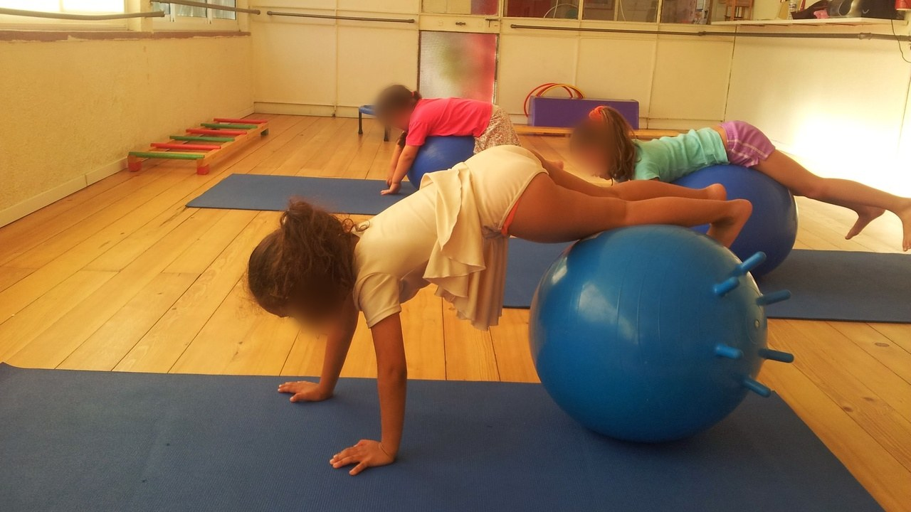
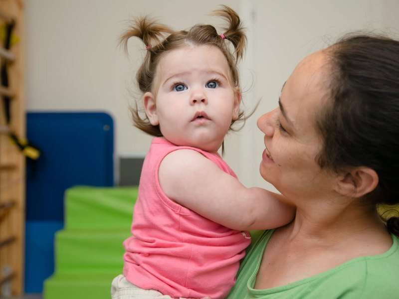
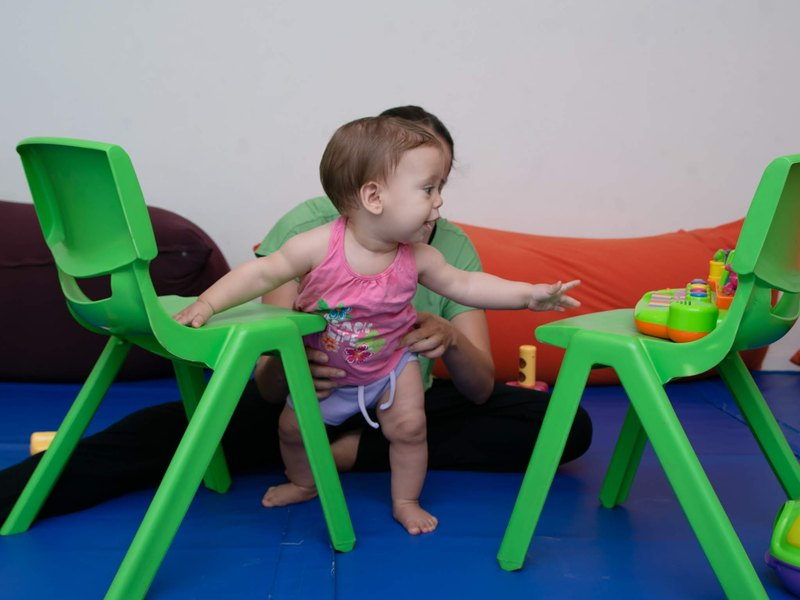
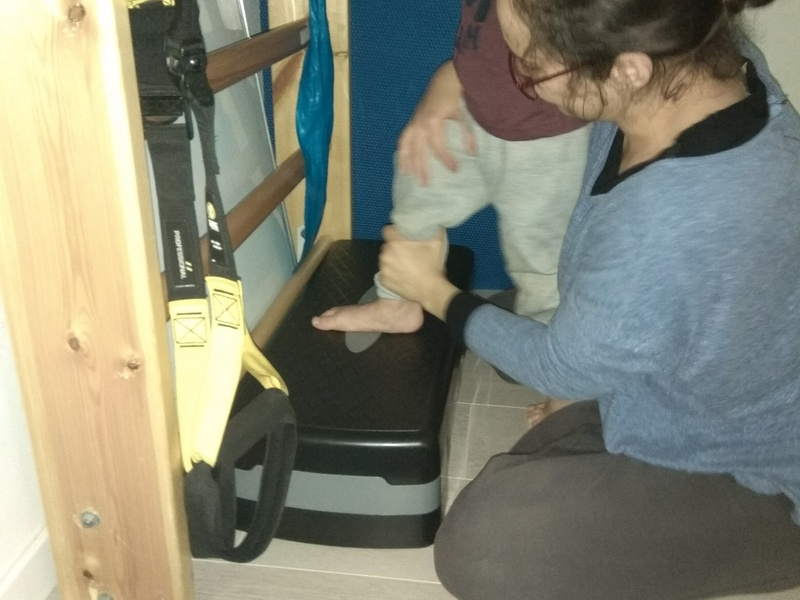
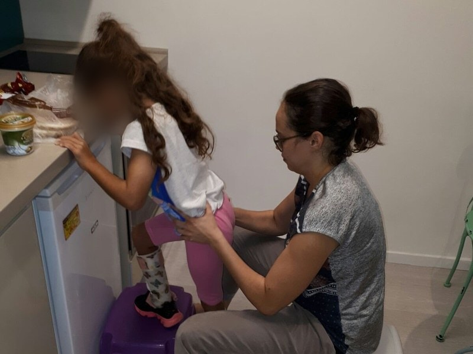
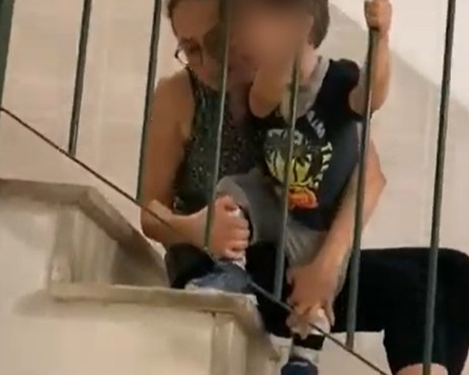

במה אני יכולה לעזור?
טיפול וליווי בתינוקות, בפעוטות ובילדים, מהשבועות הראשונים לחיים ועד גיל בית הספר.


התפתחות התינוק

טורטיקוליס והעדפת צד
הטיית ראש או סיבוב לצד אחד בלבד. טיפול מוקדם עם תרגילים פשוטים לבית מביא לשיפור מהיר.
 צילום: Gzzz, CC BY-SA 4.0 (הוקטן ומוסגר)
צילום: Gzzz, CC BY-SA 4.0 (הוקטן ומוסגר)
השטחת ראש (פלגיוצפלי)
הדרכה על מנחים, זמן בטן ומשחק, ומעקב שיעזור לראש להתעגל.

עיכוב באבני דרך
קושי בהרמת ראש, בהתהפכות, בישיבה, בזחילה, בעמידה ובהליכה.

ליווי פגים
מעקב התפתחותי וטיפול מותאם לגיל המתוקן, כולל הדרכה להורים מהיום הראשון בבית.

טונוס שרירים
טונוס נמוך (היפוטוניה), טונוס גבוה או גמישות יתר במפרקים.

מנח רגליים והליכה
הליכה על קצות האצבעות, רגליים שטוחות וחוסר יציבות בהליכה.
יציבה, קואורדינציה וקשיים מוטוריים

יציבה
קושי לשמור על יציבה בישיבה ובעמידה, עייפות מהירה ונטייה להישען. לעיתים נדרשת התערבות פיזיותרפית שתומכת גם בטיפול אצל קלינאית התקשורת או המרפאה בעיסוק.

קואורדינציה ושיווי משקל
ילדים מסורבלים, שנופלים הרבה או נמנעים מפעילות בגן ובחצר.

DCD וקשיים מוטוריים
קושי ברכישת מיומנויות כמו קפיצה, ריצה, רכיבה על אופניים ותפיסת כדור.
שיקום ילדים

שיקום לאחר ניתוח
חזרה הדרגתית ובטוחה לתנועה ולתפקוד לאחר ניתוח או פציעה, בתיאום עם הצוות המטפל.

תסמונות שונות
ליווי ארוך טווח לילדים עם תסמונות גנטיות ועיכוב התפתחותי משמעותי, עם דגש על השתתפות ועצמאות.

שיתוק מוחין (CP)
טיפול בגישה נוירו-התפתחותית לשיפור השליטה המוטורית, היציבה והניידות, בהתאם למטרות התפקודיות של הילד והמשפחה.

התאמת ציוד וסביבה התפתחותית
התאמת ציוד שיקומי והתאמת הסביבה בבית ובמסגרת החינוכית, כך שהילד יוכל להשתתף באופן פעיל ככל האפשר.
הרטבה, דחיפות ועצירות
הקשיים בשליטה על סוגרים קשורים להיבטים פיזיולוגיים, תחושתיים, מוטוריים, וכמובן גם רגשיים והתנהגותיים. בטיפול הילד והמשפחה לומדים אסטרטגיות להתמודדות, מתוך הבנה של הקשיים הספציפיים של כל ילד.
- הרטבה ביום ובלילה (אנורזיס)
- עצירות ובריחת צואה (אנקופרזיס)
- דחיפות ותכיפות במתן שתן
- הרגלי התרוקנות נכונים, תרגול שרירי רצפת האגן ונשימה
- שיפור הקשב לתחושות הגוף, בשילוב מיינדפולנס
הילד שותף מלא: יחד אנחנו קובעים מטרות קטנות וברורות, והטיפול מלווה בהדרכת הורים פרונטלית או אונליין. הטיפול בילדים שונה לגמרי מטיפול רצפת אגן במבוגרים ואינו חודרני.
קבוצות
כרגע אין קבוצות פעילות. מתעניינים? שלחו לי הודעה, ואעדכן כשתיפתח קבוצה חדשה.






קבוצות לאמהות ותינוקות
קבוצה קטנה ואינטימית של אמהות ותינוקות בקליניקה, שבה כל תינוק מקבל מענה מקצועי וכל אמא מקבלת מקום לשאלות. אפשר גם לארגן מפגש פרטי בבית עם חברה או שתיים.
קבוצות לילדים
קבוצות יציבה וקואורדינציה לילדים בגיל הגן ובית הספר. בקבוצה קטנה הילדים מחזקים את שרירי הגו, משפרים שיווי משקל וקואורדינציה, ונהנים מתנועה משותפת ומחוויה של הצלחה.
איפה מתקיים הטיפול?
בקליניקה ברחובות
הטיפולים מתקיימים בקליניקה נעימה ברחובות, המאובזרת בציוד חדיש. בקליניקה יש גם מטבח, שבו אפשר לתרגל מיומנויות יומיומיות בסביבה טבעית, פינת המתנה נוחה להורים וחדר נפרד להדרכת הורים, ללא נוכחות הילד. לעיתים אני מגיעה גם לביקור בית, למשל להתאמת סביבה וציוד. בנוסף אני מעבירה סדנאות והדרכות הורים אונליין.
- מפגש של 50 דקות
- תרגילים לבית וקשר רציף בין המפגשים
- אפשר לקבל החזר מביטוח פרטי בהתאם לפוליסה, ומקופות החולים בהתאם לנהלים שלהן









